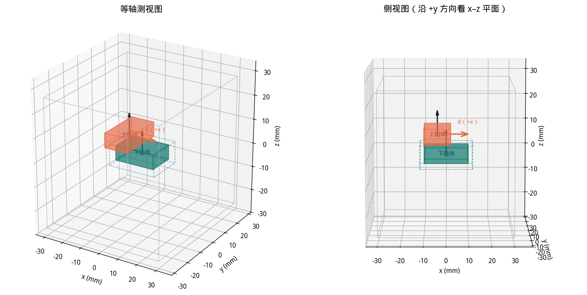
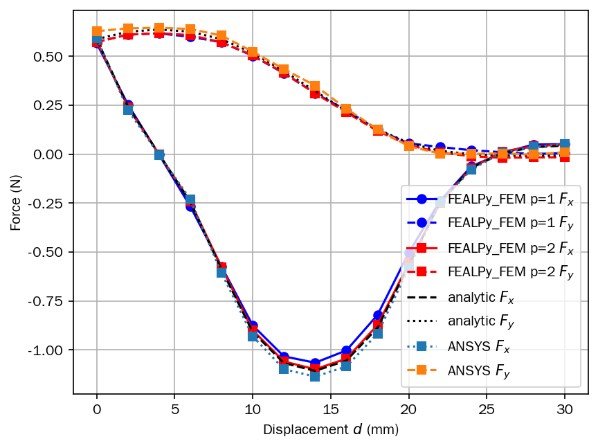
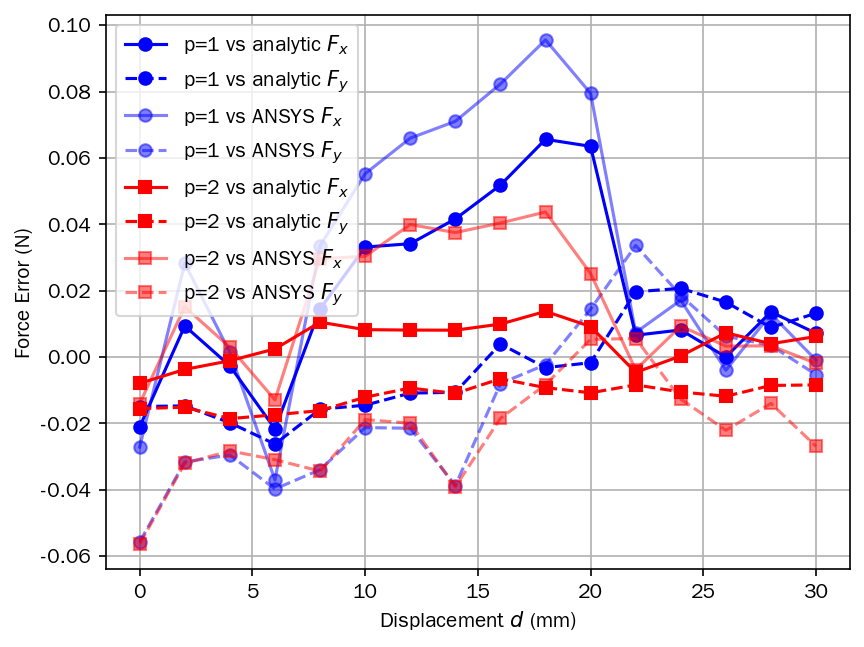

FEALPy integration study · baseline benchmark
阶段 ① / ③双永磁体三维静磁算例 · 算例原型讲解
用磁标势有限元计算两块沿 +z 平行充磁的长方体永磁体之间的磁力，
并与 Akoun–Yonnet 解析解、ANSYS EMFT 参考值对标。
本页为交互版，含 §1–§4 与附录；代码均摘自
最初程序/double_magnet_benchmark.py，行号可直接对照原文件。
16位移工况
p = 1 / 2有限元阶次
0.67% / 1.94%解析解归一化 RMSE
2 类独立参考
STAGE 01独立算例基线建立可复现、可对标的数值闭环。
STAGE 02算例工程化分块拆分职责，同时保持数值结果不变。
STAGE 03FEALPy 通用化集成沉淀公共接口，并用测试守住正确性。
§1问题设定

几何关系先于公式
两块长方体永磁体均沿 +z 充磁，上磁体沿 x 方向移动。虚线 Maxwell 盒只包围下磁体，表面积分得到下磁体受力，再统一换算为用于对标的上磁体受力。
验证范围：解析解和 ANSYS 数据均只提供 Fx、Fy；程序虽然输出 Fz，但本阶段不把 Fz 作为已验证结论。
1.1 几何（代码内统一 SI 单位，下表以 mm 标注便于阅读）
| 区域 | 下角点 (mm) | 上角点 (mm) | 尺寸 (mm) |
|---|
| 空气盒 air | (−30, −30, −27) | (x_max, 30, 27)，x_max = 30 + max(d−8, 0) | 随 d 伸长 |
| 下磁体 magnet1 | (−10, −6, −3) | (10, 6, 3) | 20 × 12 × 6 |
| 上磁体 magnet2 | (−10+d, −14, 5) | (2+d, 6, 11) | 12 × 20 × 6 |
| Maxwell 应力盒 | (−12, −8, −5) | (12, 8, 4) | 24 × 16 × 9 |
- 上磁体随位移 d 沿 x 平移，两磁体中心偏移 \((\alpha,\beta,\gamma)=(-4+d,-4,8)\) mm；
- Maxwell 盒只包围下磁体（四周留空气间隙），应力积分在盒面上进行，因此得到下磁体受力 \(F_0\)，上磁体受力 \(F_1=-F_0\)。
1.2 材料与物理常量
| 量 | 符号 | 值 |
|---|
| 真空磁导率 | \(\mu_0\) | \(4\pi\times 10^{-7}\) H/m |
| 剩磁通密度 | \(B_{r,z}\) | 0.38 T（两块磁体均沿 +z） |
| 磁化强度 | \(M_z = B_{r,z}/\mu_0\) | \(\approx 3.02\times 10^{5}\) A/m |
| 相对磁导率 | \(\mu_r\) | 1（当前所有区域） |
当前所有区域 \(\mu_r=1\)，弱形式退化为变系数 = 常系数的泊松方程；Maxwell 盒的两个对角点也在常量区给出。
1.3 对标数据 · ANSYS 参考表
- 来自 ANSYS Mechanical APDL 验证宏 EMFT，给出 16 个位移（d = 0, 2, …, 30 mm）的参考磁力 (Fx, Fy)；
- 仅用于结果对比与绘图，不参与求解；
- 对标时统一取上磁体受力 F1（见 §4.1）。
1.3 对标数据 · Akoun–Yonnet 解析公式
- 两个均匀充磁长方体间磁力的闭式解，2⁶ = 64 项双重求和，对应无限域精确解；
- 输入：两磁体半尺寸 \((a,b,c)=(10,6,3)\)、\((A,B,C)=(6,10,3)\) mm，中心偏移 \((\alpha,\beta,\gamma)=(-4+d,-4,8)\) mm；
- 当前只实现 Fx、Fy 两个分量，不算 Fz——两类参考数据均无 Fz，对标只用 Fx / Fy。
§2数学建模
控制方程（静磁、无自由电流）：
\(\nabla\cdot\mathbf{B}=0,\qquad \mathbf{B}=\mu_0(\mu_r\mathbf{H}+\mathbf{M}),\qquad \mathbf{H}=-\nabla\varphi\)
⟹ 弱形式：\(\displaystyle\int_\Omega \mu_r\nabla\varphi\cdot\nabla v\,\mathrm{d}x=\int_\Omega \mathbf{M}\cdot\nabla v\,\mathrm{d}x\)
边界条件：外边界取齐次自然条件 \(\mathbf{B}\cdot\mathbf{n}=0\)（用截断空气盒近似无限域）
纯 Neumann 注意点：刚度矩阵有常数核（\(\varphi\) 只确定到常数）。
右端 \(\int_\Omega\mathbf{M}\cdot\nabla v\,\mathrm{d}x\) 与常数函数正交（系统相容），从零初值出发的 CG 收敛；
常数平移不影响 \(\nabla\varphi\)，因此不影响 \(\mathbf{B}\) 和力。
§3数值流水线（六步）
几何建模→
fragment 共形合并→
Box 尺寸场（近细远粗）→
线性四面体网格→
区域标签 0/1/2/3→
LagrangeFESpace(p)→
组装→
PyAMG-CG 求解→
Maxwell 应力积分→
对标 AY / ANSYS
3.1 网格生成 build_gmsh_mesh() · L151–230
- 固定输入四个盒数据（air / magnet1 / magnet2 / maxwell_box）；
- OCC 建模四个 box；
fragment 布尔合并 → 区域界面成为共享四面体面（共形网格）；- Box 尺寸场：近场 h_near = 1.5 mm、远场 h_far = 6.0 mm、过渡带 Thickness = 8 mm；
- 生成网格：Algorithm3D = 10（HXT），ElementOrder = 1；
- 单元区域标签：0 = 盒外空气，1 = 盒内空气，2 = 下磁体，3 = 上磁体。
设计要点：Gmsh 只出线性四面体，有限元次数由
LagrangeFESpace(mesh, p) 控制——同一网格可做 p = 1 / 2 对比，
也规避 Gmsh 高阶节点序与 FEALPy 约定不一致的风险。
3.2 网格转换与标签 gmsh_to_fealpy_tetra_mesh() · L81–116
- Gmsh 的节点号 / 单元号不连续，先建两张压缩映射表（node_tag_to_index、element_tag_to_cell）转为连续下标；
- 按「Gmsh 体积 → 其中四面体」逐区域写入标签；
- 返回 FEALPy
TetrahedronMesh 与 cell_tag（形状 (NC,)）。
元素类型硬编码 getElementsByType(4)（线性四面体）——与「Gmsh 只出线性网格」的约定配套。
3.3 组装 assemble() · L232–253
- 刚度：
BilinearForm + ScalarDiffusionIntegrator(q=p+1) → \(\int_\Omega\nabla\varphi\cdot\nabla v\,\mathrm{d}x\)；
- 右端：
LinearForm + GradSourceIntegrator(q=p)；
- 磁化张量形状 (NC, 1, 3)，用
cell_tag >= 2 定位两块磁体单元、写入 \(M_z\)（当前所有区域 \(\mu_r=1\)，故刚度无系数）。
3.4 求解 _solve_linear_system() · L282–305
- PyAMG smoothed-aggregation 代数多重网格 + V-cycle 预条件 CG；
- rtol = 1e-10，atol = 1e-12，maxiter = 5000，从零初值出发；
- 系统半正定但相容（§2），CG 残差始终落在值域内，收敛到某个特解 \(\varphi\)。
3.5 Maxwell 应力后处理 find_maxwell_faces() + compute_maxwell_force() + _cell_grad_basis_on_faces()
- 由盒内 / 盒外空气的标签跳变（0 ↔ 1）找出 Maxwell 闭合面；
- 法向定向：比较面中心与盒中心连线方向，统一修正为指向盒外；
- 辅助函数
_cell_grad_basis_on_faces() 在面高斯点上求相邻两侧四面体的基函数梯度（按面顶点局部排列分组）；
- 面上的 \(\mathbf{B}=-\mu_0\nabla\varphi\) 取相邻两侧单元的平均（面两侧均为空气，\(\mathbf{B}\) 连续）；
- 积分 Maxwell 应力张量：
\(\mathbf{F}=\int_S \frac{1}{\mu_0}\left[(\mathbf{B}\cdot\mathbf{n})\mathbf{B}-\frac{1}{2}|\mathbf{B}|^2\mathbf{n}\right]\mathrm{d}x\)
得到下磁体受力 \(F_0\)；上磁体受力 \(F_1=-F_0\)（作用力与反作用力）。
Maxwell 盒不是独立材料（也是空气），网格中唯一的痕迹是「盒内空气(1) / 盒外空气(0)」的标签，因此用标签跳变找面。
3.6 单工况与扫描 solve() · L388–408
solve(d)：单工况完整流程——建网格 → 组装 → 求解 → 算力，返回 {d, phi, F0, F1}；run_scan()（L410–533）为扫描程序：遍历 d = 0, 2, …, 30 mm、p = 1 与 p = 2，打印逐点力并绘制力—位移曲线与误差曲线——按约定此处不附代码。
§4结果与验证
4.1 典型工况（p = 2，d = 0，初始位置）
对比量统一取上磁体受力 \(F_1\)：
| 来源 | Fx (N) | Fy (N) | Fx 误差 | Fy 误差 |
|---|
| FEALPy FEM | 0.580421 | 0.572818 | — | — |
| Akoun–Yonnet | 0.588356 | 0.588356 | −1.3% | −2.6% |
| ANSYS 参考 | 0.594460 | 0.629140 | −2.4% | −9.0% |
偏差解读：AY 是无限域精确解，FEM 用截断空气盒 + \(\mathbf{B}\cdot\mathbf{n}=0\) 近似，
误差中混有区域截断误差；ANSYS 的 Fy 方向 9% 偏差属原 benchmark 已知量级。
4.2 全位移扫描（p = 2，16 个工况，d = 0, 2, …, 30 mm）
| 参考 | 分量 | 归一化 RMSE | 最大误差 (N) |
|---|
| Akoun–Yonnet | Fx | 0.67% | 1.37e-2（d=18） |
| Fy | 1.94% | 1.86e-2（d=4） |
| ANSYS | Fx | 2.17% | 4.37e-2（d=18） |
| Fy | 4.14% | 5.63e-2（d=0） |
归一化按对应参考分量的峰值；16 个位移工况的计算结果与两类参考曲线形状一致。
完整 CSV 与图片见 双永磁体算例+命令行参数/results/。

图 1 · 力—位移对比曲线（d = 0..30 mm 共 16 工况）：
FEALPy FEM 的 Fx / Fy（p=1 圆圈、p=2 方块，实线 Fx、虚线 Fy）
与 Akoun–Yonnet 解析解、ANSYS 参考的逐点对比，曲线形状与两类参考一致。

图 2 · 带符号误差曲线：误差定义为 FEALPy − 参考（单位 N），
零水平线区分结果相对参考解偏大还是偏小；含 p=1 / p=2 分别对
Akoun–Yonnet 与 ANSYS 的误差曲线，与表 4.2 的统计对应。
两图由最初程序
double_magnet_benchmark.py --scan（p=1 与 p=2 各 16 工况）
实际运行生成（等价命令见附录；headless 存图脚本为
generate_figures.py），点击图片可在新标签页查看原尺寸大图。
附录运行方式
命令行入口 main() · L536–554
--d：位移（mm），默认 0；--p：有限元次数，1 或 2，默认 2；--scan：全扫描模式（p = 1 与 p = 2 各算一遍 16 个位移）。
# 单工况（d=0 mm，p=2）
python double_magnet_benchmark.py --d 0 --p 2
# 全扫描（p=1 与 p=2，16 个位移，弹出力—位移曲线与误差图）
python double_magnet_benchmark.py --scan